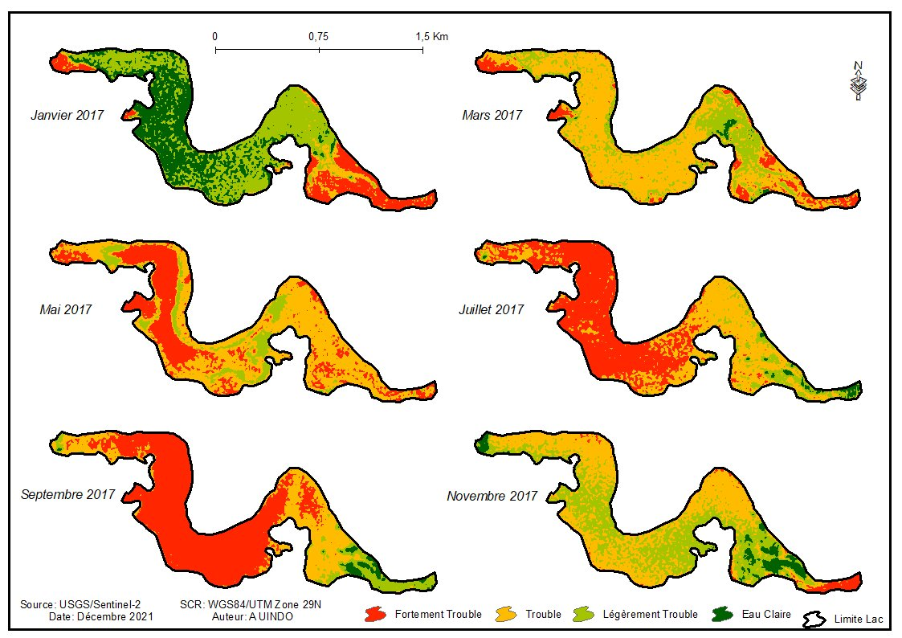

Télédétection · Qualité de l'eau
Turbidité du lac Wégnia par Sentinel-2
Série 2016 – 2021, indice NDTI. Les eaux troubles couvrent en moyenne 34,6 à 39,3 % du lac selon les années, et plus de 77 % en novembre entre 2018 et 2021, sous l'effet des apports post-pluviaux. Communication orale au MSAS 2026.